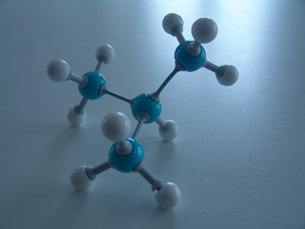

Module 6—Petrochemicals
Big Picture

© Joy Fera/384497/fotolia
This is a ball and stick model for the hydrocarbon molecule 2-methylpropane.
In this module you will focus on the types of chemical reactions used to convert hydrocarbons into other classes of organic compounds. These kinds of reactions are the basis of the petrochemical industry. Like most industries, the petrochemical industry is interested in “greening” its practices—making them more environmentally friendly.
As you work through this module you will investigate how the chemical industry is adapting its processes to reduce the industry’s impact on the environment. Some practices to consider when greening chemical processes are as follows:
- Prevent waste.
- Design processes that reduce or even prevent waste, have fewer by-products and more of the original material in the final product (atom economy), and use renewable materials in processes.
- Develop materials that will degrade after use by natural processes (sunlight or biodegradation)
- Reduce the toxicity of compounds.
- Design processes that involve less toxic materials, including solvents.
- Design processes so that by-products have low toxicity.
- Design processes that involve less toxic materials, including solvents.
- Improve efficiency. Efficiency can be improved in two ways:
- Strive for fewer by-products and less waste products (improved atom economy).
- Increase the use and development of catalysts to reduce energy requirements for reactions.
- Strive for fewer by-products and less waste products (improved atom economy).
- Consider safety.
- Design systems to reduce the potential for accidents and accidental exposure.
You will also learn how the green practices described are applied to chemical reactions—both the kind you will carry out in a laboratory and those that occur in petrochemical facilities.
 Assessment in This Module
Assessment in This Module
Each lesson contains a range of activities and assessment options. These include assignments, labs, and Self-Check, Try This, Discuss, Reflect and Connect, and Reflect on the Big Picture activities. Instructions will be provided for each of these activities so that you can appropriately focus your time and effort. Your teacher will tell you which assessment options to complete and which responses to submit for marks or feedback. Remember to save all of your work in your Chemistry 30 folder.
Aspirin (Acetylsalicylic acid, or ASA) is one of the most common drugs in the world. Aspirin can be made from compounds found in petroleum or from another starting point. At the completion of Module 6 you will use the knowledge of organic reactions you gain in this module to analyze two possible processes for manufacturing Aspirin. The Module 6 Assessment is done as part of the Unit Assessment. You may wish to look at the Unit Assessment before starting Lesson 1.